COAL Uni Lübeck
Awareness auf Schleswig-Holsteins größtem Campus-Festival.


Herausforderungen
Die meisten Hochschulen haben Beschwerdestellen. Die wenigsten werden genutzt. Saferspaces senkt die Hemmschwelle auf ein Minimum.
Offizielle Beschwerdestellen werden als bürokratisch und einschüchternd empfunden. Anonyme, digitale Meldewege senken die Hürde.
Studierende stehen in Abhängigkeit zu Dozent:innen. Anonyme Meldungen schützen vor Konsequenzen.
Automatische Mehrsprachigkeit sorgt dafür, dass alle Studierenden Hilfe in ihrer Sprache erhalten.
Hochschulen müssen Schutzkonzepte nachweisen. Saferspaces liefert die Datenbasis für Compliance-Reporting.
Proof of Concept
Seit 2023 ist saferspaces fester Bestandteil der Awareness-Infrastruktur an der Hochschule Flensburg – als niedrigschwelliger, anonymer Meldeweg für Studierende und Mitarbeitende.

„Unser Campus soll ein sicherer Ort sein. Wenn er sich für dich einmal nicht so anfühlt, z.B. weil du Diskriminierung oder Belästigung erlebst oder auf Barrieren stößt, melde das!“
Referenzen
Awareness auf Schleswig-Holsteins größtem Campus-Festival.
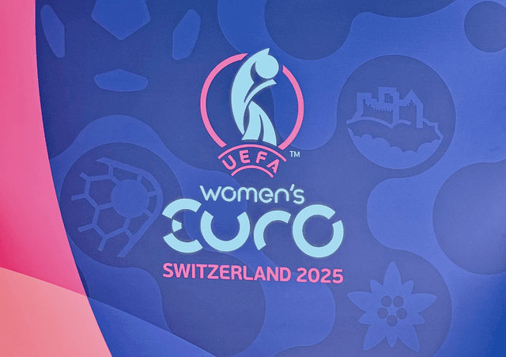
Erneut fester Bestandteil des Safeguarding-Konzepts bei der Frauen-EM.
Case Study →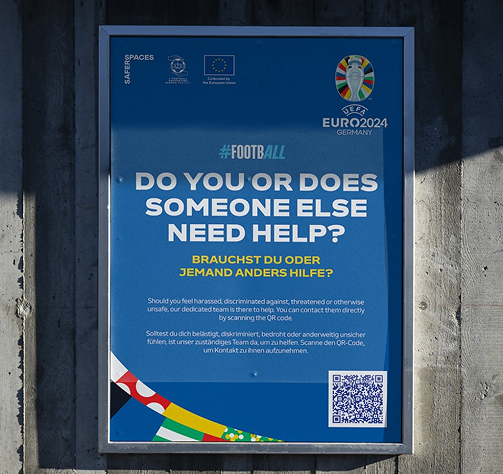
Teil des offiziellen Safeguarding-Konzepts in allen 10 Stadien.
Case Study →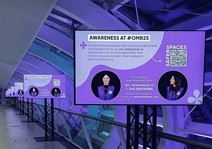
QR-Codes auf Screens + Venue-Link für alle Besucher:innen.
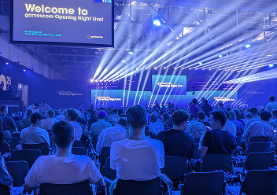
Awareness-Infrastruktur für eine der größten Gaming-Messen.

Barrierefreie Meldewege auf dem gesamten Festgelände.
Case Study →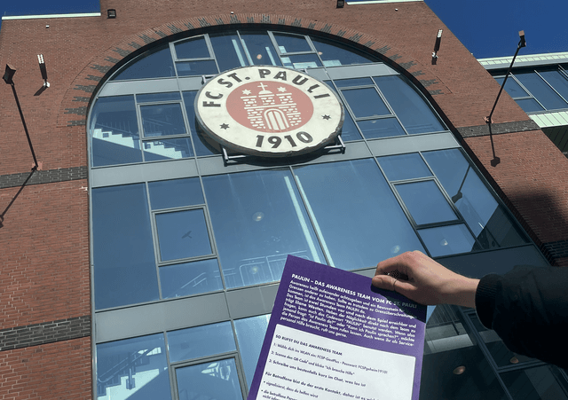
Niedrigschwellige Meldeoption im Stadion.
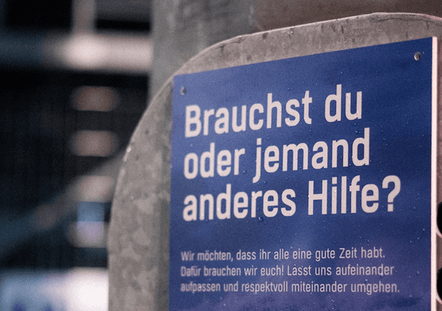
Niedrigschwellige Meldemöglichkeit im Holstein-Stadion.
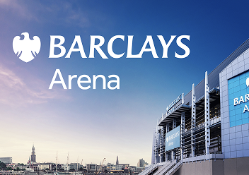
Direkter Kontakt zum Awareness-Team seit 2025.
Case Study →Kulturfestival mit über 1,5 Mio. Besucher:innen jährlich.
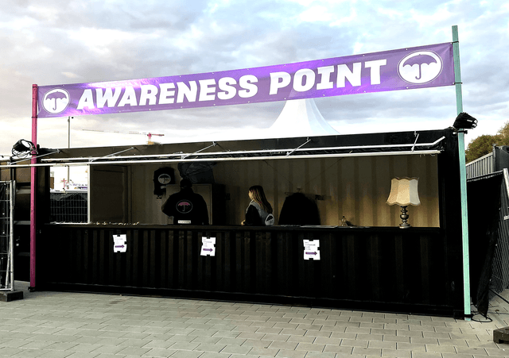
Seit 2022 fester Teil des Awareness-Konzepts.
Awareness auf einem der größten Seefeste Deutschlands.
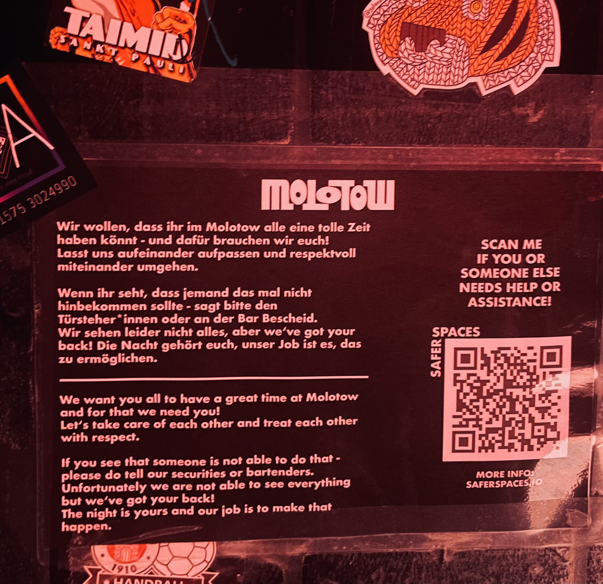
Echtzeit-Awareness im Club – Teams reagieren sofort auf Meldungen.
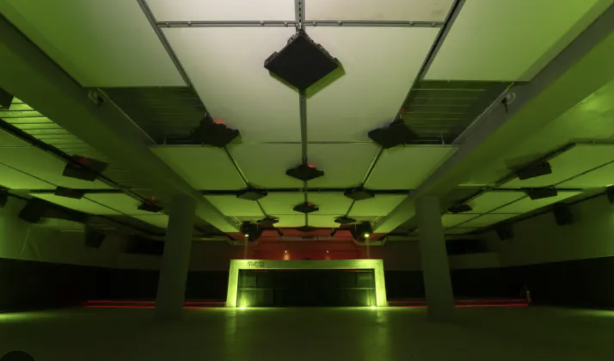
Drei Floors, 1.000 m² – Awareness im Frankfurter Flagship-Club.
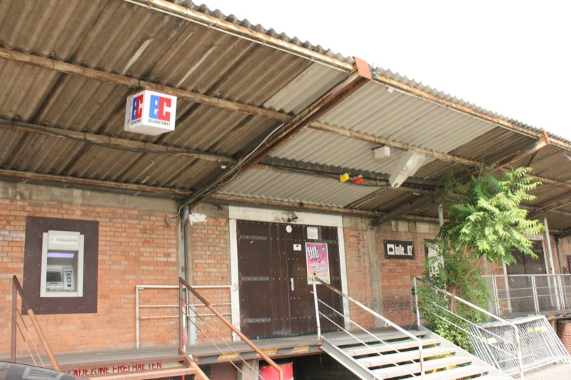
Awareness im Kultur- und Konzerthaus auf dem ehemaligen Güterbahnhof.
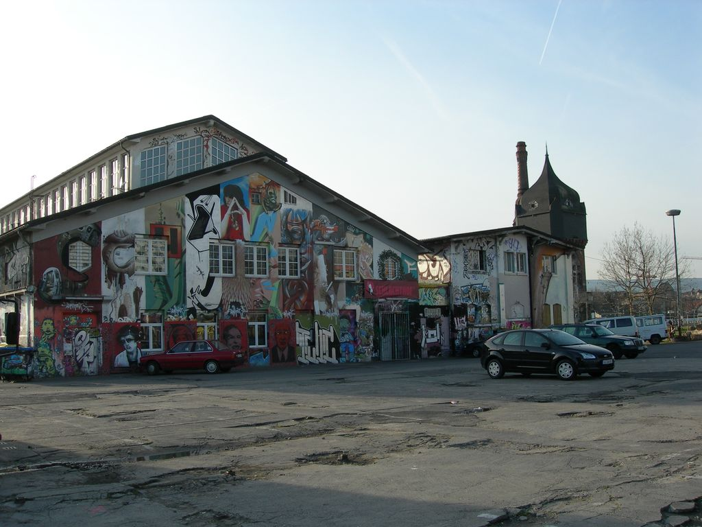
Meldekanal im soziokulturellen Zentrum mit über 300 Veranstaltungen pro Jahr.
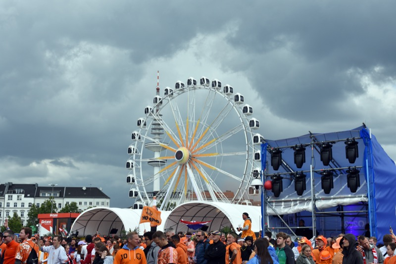
Safeguarding für 50.000 Fans auf dem Heiligengeistfeld.
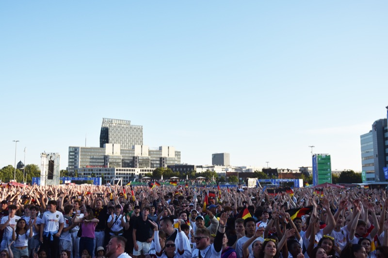
Safeguarding auf Europas größter Fan Mile.
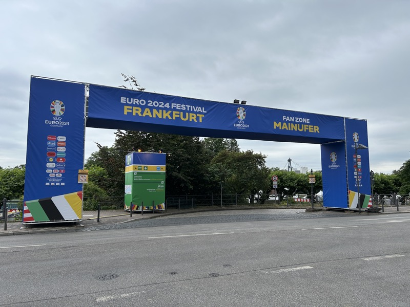
Safeguarding am Mainufer mit Blick auf die Skyline.
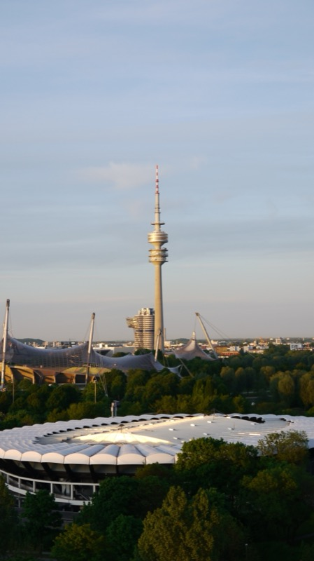
Safeguarding für 700.000 Fans im Olympiapark.
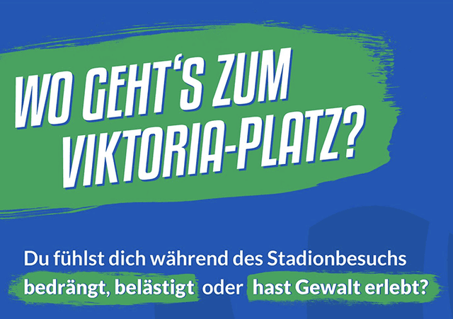
Anonyme, digitale Meldeoption in der AVNET Arena.
Awareness auf der gesamten Club Tour 2025.
Case Study →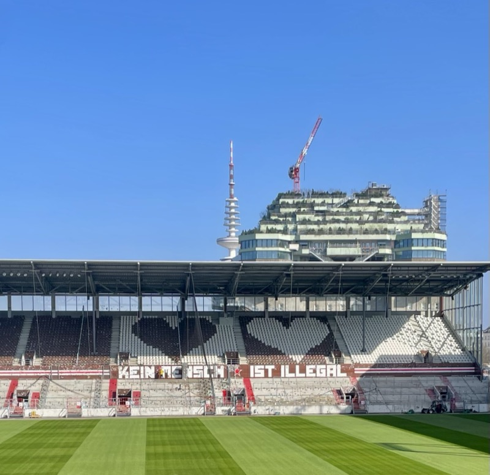
Awareness auf dem Kunst- und Kulturfestival am Millerntor-Stadion.
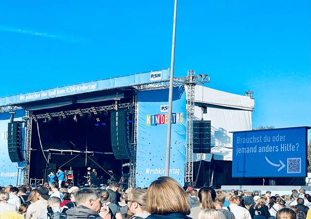
Awareness beim größten Kinderfest Schleswig-Holsteins.

Analyse & Reports
Jede Meldung wird strukturiert erfasst – nach Kategorie, Zeitpunkt und Kontext. Das Analyse Dashboard bündelt alle Daten und erstellt automatisierte Reports für Hochschulleitungen, Gleichstellungsbüros und Förderanträge. DSGVO-konform: keine personenbezogenen Daten, keine Standortdaten, keine Gerätekennungen.
Zwei Systeme – Ein Zweck
Das Live-System für Veranstaltungen auf dem Campus. Per QR-Code melden Studierende Vorfälle in Echtzeit – das Awareness-Team reagiert sofort über die saferspaces App. Ideal für Ersti-Partys, Sommerfeste und Campus-Events.
Mehr erfahren ↓Der permanente Meldekanal – unabhängig von Veranstaltungen. Studierende und Mitarbeitende melden anonym Diskriminierung, Belästigung oder Machtmissbrauch. Die Meldungen gehen direkt an die zuständige Stelle, z.B. die Gleichstellungsbeauftragte. So wissen Hochschulen, was ihre Studierenden bewegt.
Mehr erfahren ↓In einer persönlichen Demo zeigen wir euch, wie saferspaces an eurer Hochschule oder Schule funktioniert.